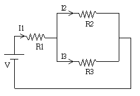
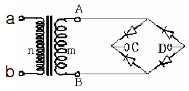
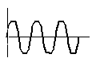
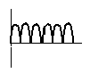
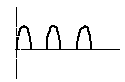
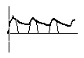

경비지도사-2차(기계경비개론) (2008-11-09 기출문제)
1. 공장 내 CCTV시스템 구성 시 400m 이내의 근거리에 있는 카메라와 모니터를 연결할 경우 가장 효율적인 통신매체는?
- PSTN망
- 동축케이블
- 광케이블
- ISDN망
(정답률: 알수없음)

2. 감지기가 설치된 현장에서 발생한 경보신호를 경비회사의 관제센터로 전달하기 위해 전용회선을 통신매체로 사용했을 때의 특징으로 거리가 먼 것은?
- 공중회선에 비해 많은 감지기 설치가 가능하다.
- 공중회선에 비해 회선의 이상을 조기에 발견할 수 있다.
- 공중회선에 비해 기본비용이 많이 든다.
- 높은 안전성이 요구되는 경비대상시설에 사용하기 적합하다.
(정답률: 알수없음)
3. 공칭작동 온도가 최고 주위 온도보다 20℃ 이상 높은 감지기를 설치하는 화재 감지기는?
- 정온식 스포트형
- 이온화식
- 차동식 스포트형
- 광전식
(정답률: 알수없음)
4. DC 12V, 1.5A 정격의 전원공급장치로 콘트롤러에 1.0A를 공급하면, 조(set)당 240mW 소모되는 적외선 감지기를 최대 몇 조(set)까지 연결할 수 있는가?
- 5 조(set)
- 10 조(set)
- 25 조(set)
- 50 조(set)
(정답률: 알수없음)
5. DVR의 영상저장방식 중에서 압축률이 가장 높은 것은?
- M-JPEG
- MPEG1
- JPEG
- MPEG4
(정답률: 알수없음)
6. 동축케이블에 “5C - 2V” 로 표시되어 있을 경우, “C”가 의미하는 것은?
- PVC 외피의 종류
- 외부도체의 종류
- 절연체의 종류
- 특성 임피던스의 종류
(정답률: 알수없음)
7. 홍채인식에 대한 설명으로 가장 관계가 먼 것은?
- 홍채의 명암 패턴을 영역별로 분석하여 판단한다.
- 홍채의 중심점, 삼각주, 분기점, 단점을 데이터화하여 판단한다.
- 비접촉 방식이라 거부감이 없는 생체인식이다.
- 홍채의 패턴을 데이터화 하여 등록된 데이터와 비교 판단한다.
(정답률: 알수없음)
8. 다음 중 도플러효과를 이용한 감지기는?
- 적외선 감지기
- 마이크로웨이브 레이더 감지기
- 열선감지기
- 전계 감지기
(정답률: 알수없음)
9. CCTV SYSTEM에서 영상 노이즈의 발생 원인으로 가장 거리가 먼 것은?
- 전기 동력선과 동축케이블을 하나의 배선파이프에 넣는 경우
- CONNECTOR 접촉이 불량한 경우
- 영상케이블 심선이 접지와 접촉된 경우
- 설치된 광케이블 위에 전력케이블이 지나간 경우
(정답률: 알수없음)
10. 다음 중 정보를 저장하고 있는 태그(Tag)와 이를 인식하는 리더(Reader) 사이에 전파를 통한 무선인식 기능과 추적기능을 제공하여 출입통제시스템과 물류, 유통 등의 목적을 위해 가장 효율적으로 사용할 수 있는 시스템은?
- 바코드(Bar Code) 시스템
- 스마트카드(Smart Card) 시스템
- RFID(Radio Frequency Identification) 시스템
- 지문인식 시스템
(정답률: 알수없음)
11. 전기정 중에 양방향 강화유리 개폐문에 가장 적합한 것은?
- 일반 전기정
- 전기스트라이크 전기정
- 전자식 전기정
- 데드볼트식 전기정
(정답률: 알수없음)
12. 다음 외곽 감지 센서 중 지하 매설방식으로 적합하지 않는 것은?
- 수평 전계 센서
- 장력 센서
- 균형 압력 센서
- 광섬유 진동 센서
(정답률: 알수없음)
13. 다음 중 저항에 관한 설명 중 틀린 것은?
- 전류, 전압, 저항 3가지 요소의 관계를 옴의 법칙으로 표현하며 전류는 전압에 비례하고 저항에 반비례한다.
- 저항 R을 n개 직렬연결시 합성 저항 = nR(Ω)로써 n배 만큼 저항 값이 증가한다.
- 같은 크기 값의 저항 R을 n개 병렬연결시 합성저항은 1/n 배 만큼 감소한다.
- 감지기의 선로가 길어지면 선로 저항은 감소한다.
(정답률: 알수없음)
14. 다음의 직ㆍ병렬 회로에서 R1=3Ω, R2=3Ω, R3=6Ω이고 V=30V의 직류를 인가할 경우 전류 I2의 값은?

- 3A
- 4A
- 5A
- 6A
(정답률: 알수없음)
15. 콘크리트 형태의 담장이 설치된 주택에 감지기를 설치할 경우, 담장에서부터 주택 내부까지 3단계로 구분하여 감지기를 설치하려 한다. 이 때 외부에서 내부 순으로 설치할 수 있는 감지기를 가장 적합하게 나열한 것은?
- 적외선 감지기 - 자석 감지기 - 열선감지기
- 열선감지기 - 자석 감지기 - 마이크로웨이브 감지기
- 초음파 감지기 - 자석 감지기 - 마이크로웨이브 감지기
- 열선 감지기 - 초음파 감지기 - 장력 감지기
(정답률: 알수없음)
16. 생체 인식을 통하여 출입통제를 하고자 할 때 가장 부적합한 것은?
- 주름
- 지문
- 홍채
- 정맥
(정답률: 알수없음)
17. 다음 중 옥외 외곽의 담장이나 펜스를 통해 침입하는 것을 감지하기 위한 감지기로 가장 거리가 먼 것은?
- 마이크로웨이브 센서
- 음향 센서
- 광케이블 센서
- 장력 센서
(정답률: 알수없음)
18. 기계경비시스템(무인경비시스템)의 오경보 요인 중 사용자에 의해 발생하는 감지기 오작동을 줄이기 위해 사용할 수 있는 방법으로 가장 거리가 먼 것은?
- 경비세트 및 해제 시 감지기의 감지를 지연시키는 기능 설정
- 경비세트 및 해제 시 출입문 잠금장치가 같이 작동하게 설정
- 경비세트 및 해제를 하는 카드리더를 경비구역 밖에 설치
- 주변기기와 감지기의 DC전원을 분리하여 공급
(정답률: 알수없음)
19. 다음 중 통신회선에 대한 설명으로 틀린 것은?
- 전용회선은 Point-to-Point 방식의 1:1 직통회선이다.
- 기계경비용으로 사용되는 전용회선은 데이터량이 적고 요금이 저렴한 저속도 회선을 많이 사용한다.
- 전용회선은 통신 속도별로 요금의 차등이 있으며 통신량에는 관계없다.
- 전용회선은 망구축 및 다양한 단말기 접속이 불가능하다.
(정답률: 알수없음)
20. 일반점포의 기계경비 시스템 설계시 단계별 규제를 잘못 설명한 것은?
- 창문은 1단계 규제를 한다.
- 셔터는 1단계 규제를 한다.
- 실내 공간은 2단계 규제를 한다.
- 후문은 2단계 규제를 한다.
(정답률: 알수없음)
21. 다음 회로도에서 단자 a와 b사이에 정현파 전원을 인가할 경우 단자 C와 D사이에 측정된 전압 파형에 해당하는 것은?





(정답률: 알수없음)
22. 다음 중 열선감지기에 대한 설명으로 틀린 것은?
- 열선감지기의 구성요소는 감열소자, 반사경, 필터 등으로 구성된다.
- 열선감지기는 보통 바닥에서 2 ~ 2.5m 높이의 벽면 또는 천장에 설치한다.
- 예상 침입경로가 감지기 경계구역을 가로지르는 방향으로 설치한다.
- 열선감지기의 동작전원은 외부에서 공급하지 않고 감지기 자신이 원적외선을 변환하여 사용한다.
(정답률: 알수없음)
23. 다음 중 창문을 통한 침입을 감지하기 위해 외부에 설치된 적외선 감지기의 오작동 요인으로 가장 적합하지 않은 것은?
- 안개
- 비
- 눈
- 바람
(정답률: 알수없음)
24. 렌즈에 의해 결상된 광학상을 전기신호로 변환하는 즉, 피사체에 반사된 빛을 받아 상을 맺는 소자로서 빛의 에너지를 전기적 에너지로 변환하는 고체 촬상 소자의 종류가 아닌 것은?
- MOS형
- MCD형
- CCD형
- CMD형
(정답률: 알수없음)
25. CCTV 카메라 렌즈의 초점거리를 f, 피사체에서 렌즈까지의 거리를 a, 렌즈에서 영상이 맺히는 결상위치까지의 거리를 b라 할 때 f, a, b의 관계를 나타낸 식은?
- 1/a + 1/b = f
- 1/a + 1/b = 1/f
- a + b = 1/f
- a + b = f
(정답률: 알수없음)
26. 외곽침입센서 중 낙뢰에 가장 강한 센서는?
- 전계 센서
- 장력 센서
- 광섬유 케이블 센서
- 자력식 케이블 센서
(정답률: 알수없음)
27. 다음 중 콘덴서에 관한 설명으로 틀린 것은? (문제오류로 실제 시험에서는 1, 4번이 정답처리 되었습니다. 여기서는 1번을 누르면 정답 처리 됩니다.)
- 교류에서는 전기를 저장하는 특성이 있고 직류에서는 주파수에 의해 임피던스가 변하므로 교류를 차단하는 성질이 있다.
- 병렬접속의 경우 합성정전용량은 각각의 용량의 합이 된다.
- 콘덴서는 정전기를 저장하는 소자로써 정전기를 저장하는 양을 정전용량이라 한다.
- 같은 용량의 콘덴서를 직렬로 n개 연결 시 합성정전용량은 1/n이 된다.
(정답률: 알수없음)
28. 기계경비시스템(무인경비시스템)에 사용하는 감지기의 오경보를 유발할 수 있는 요인으로 가장 관계가 먼 것은?
- 전용회선
- 사용자
- 기기설치 위치
- 대상물의 환경
(정답률: 알수없음)
29. 침입감지 센서가 침입자에 의해 작동할 때 조명등도 함께 작동하게 하여 침입상황을 쉽게 확인할 수 있도록 센서와 조명장치를 연동하여 사용할 경우 가장 적합하지 않은 조명등은?
- 텅스텐 할로겐등
- 수은등
- 텅스텐 필라멘트등
- 백열등
(정답률: 알수없음)
30. 다음 중 적외선 감지기의 설치에 대한 설명으로 틀린 것은?
- 반사형은 실내형으로만 사용하고 최대 설치거리는 여러 가지 제약으로 10m 이하에서 주로 설치한다.
- 담장 위 설치높이는 담장위에서 감지기 중앙까지 장소에 따라 다르지만 일반적으로 1~2m 정도에 설치한다.
- 내부창문 설치 시 설치높이는 창문틀에서 30~40cm 정도에 설치한다.
- 통행규제용 1단 설치 시(정원, 통로규제) 설치높이는 보통 바닥에서 50~60cm 정도이고 나무나 기타 물체를 이용하여 넘어올 수 있는 장소는 그 물체로부터 충분한 이격을 두고 설치한다.
(정답률: 알수없음)
31. 보행거리가 55m인 복도에 화재감지기(연기감지기 1종)를 설치할 경우 최소 몇 개 이상 설치해야 하는가?
- 2개
- 3개
- 4개
- 5개
(정답률: 알수없음)
32. 영상 전송방식은 동화상전송, 정지화상전송, 준동화상전송으로 분류된다. 다음 중 장거리 동화상전송 시 가장 적합한 전송매체는?
- 공중회선
- 평형케이블
- 56kbps 전용회선
- 광케이블
(정답률: 알수없음)
33. 출입 통제용으로 사용되는 생체 인식 시스템에서 보안성이 가장 뛰어난 인식 방식은?
- 음성
- 얼굴
- 손모양
- 홍채
(정답률: 알수없음)
34. 기계경비시스템의 종단저항 값으로 2.0㏀을 구성할 수 있는 경우는?
- 100Ω 저항 5개 보유
- 200Ω 저항 6개 보유
- 6㏀ 저항 3개 보유
- 10㏀ 저항 2개 보유
(정답률: 알수없음)
35. 기계경비도면 설계 시 필수 기재사항이 아닌 것은?
- 분전함 위치
- 축척
- 비상연락망
- 통신 단자함 위치
(정답률: 알수없음)
36. 사면이 유리로 된 박물관 진열장의 내부에 있는 물품을 감시하기 위해 진열장 내부에 사용하는 감지기로 가장 적합한 것은?
- 열선 감지기
- 적외선 감지기
- 마이크로웨이브 감지기
- 마이크로웨이브 레이더 감지기
(정답률: 알수없음)
37. 출입통제시스템의 카드종류 중 기억용량, 안정성, 정보량 등이 가장 우수한 카드는?
- 마그네틱 카드
- 스마트 카드
- RF 카드
- Wiegend 카드
(정답률: 알수없음)
38. 다음 중 디지털 녹화장치(DVR)에 대한 설명으로 틀린 것은?
- 영상저장은 압축하지 않고 저장한다.
- 반복적으로 녹화, 재생하여도 화질이 떨어지지 않는다.
- 화상을 디지털로 변환하는 기능이 있다.
- 신속하게 검색할 수 있다.
(정답률: 알수없음)
39. 기계경비시스템(무인경비시스템)의 감지기 회로를 구성함에 있어 종단저항을 설치하는 이유를 가장 올바르게 설명한 것은?
- 사용자가 경비세트를 하고 출입문을 벗어나는 동안 감지기의 작동을 지연하기 위해
- 사용자가 경비해제를 하지 않고 문을 여는 것을 확인하기 위해
- 감지기 회로의 선로 상태나 감지기의 탈락을 감시하기 위해
- 보조 전원이 차단되는 것을 경보하기 위해
(정답률: 알수없음)
40. 외곽 감지 시스템 제어반(Processing Unit)의 표시기능이 아닌 것은?
- 전원 상태
- 통신 상태
- 접지 상태
- 이상종류
(정답률: 알수없음)